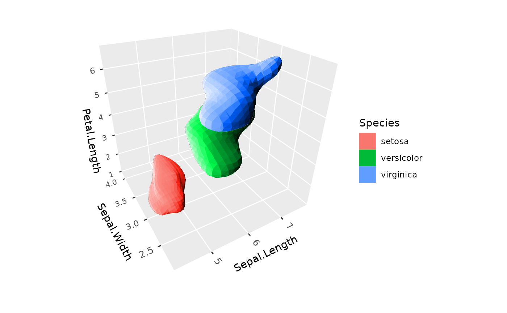
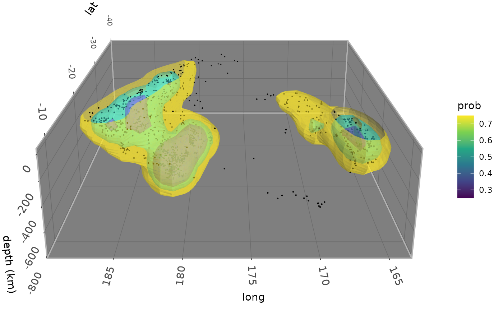

Estimates the density of a 3D point cloud, and draws surfaces of constant
density enclosing given fractions of it: the 3D analog of
ggplot2::geom_density_2d(). Each surface bounds the smallest region
containing a given fraction of the estimated probability mass (a "highest
density region"), so that e.g. probs = 0.5 shows where the densest half of
the data lie.
Usage
geom_isodensity_3d(
mapping = NULL,
data = NULL,
stat = StatIsodensity3D,
position = "identity",
...,
probs = 0.5,
n = 30,
h = NULL,
adjust = 1,
cap = FALSE,
light = NULL,
cull_backfaces = FALSE,
scale_depth = TRUE,
na.rm = FALSE,
show.legend = NA,
inherit.aes = TRUE
)
stat_isodensity_3d(
mapping = NULL,
data = NULL,
geom = GeomIsosurface3D,
position = "identity",
...,
probs = 0.5,
n = 30,
h = NULL,
adjust = 1,
cap = FALSE,
light = NULL,
cull_backfaces = FALSE,
scale_depth = TRUE,
na.rm = FALSE,
show.legend = NA,
inherit.aes = TRUE
)Arguments
- mapping
Set of aesthetic mappings created by
aes().- data
The data to be displayed in this layer: a grid of points, with one row for every combination of
x,y, andzvalues, such as produced byexpand.grid(). Even grid spacing is not required.- stat
The statistical transformation to use on the data. Defaults to
StatIsosurface3D.- position
Position adjustment, defaults to "identity". To collapse the result onto one 2D surface, use
position_on_face().- ...
Other arguments passed on to the layer function (typically GeomPolygon3D), such as aesthetics like
colour,fill,linewidth, etc.- probs
Numeric vector of fractions of probability mass, between 0 and 1, for each surface to enclose. Defaults to
0.5, a single surface around the densest half of the data. Nested surfaces hide one another unless they are translucent, e.g. withalpha.- n
Number of grid points along each axis at which the density is estimated. Larger values give smoother surfaces, at a cost in time that grows with its cube.
- h
Bandwidths of the kernel: a single number, or one for each of
x,y, andz. As instat_density_3d()andMASS::kde2d(), a bandwidth is four times the standard deviation of the Gaussian kernel. IfNULL(the default), each is estimated with the normal reference rule for three dimensions,4 * (4/5)^(1/7) * s * n^(-1/7), wherenis the number of points andsthe smaller of their standard deviation and interquartile range divided by 1.34. Weights are ignored in estimating bandwidths.- adjust
Multiplier for the bandwidths, a single number or one per axis, e.g.
adjust = 2for a smoother estimate.- cap
Logical indicating whether to close surfaces with flat caps where they're cut by limits set on the plot's scales, so that they show solid cross sections rather than being left open there. Defaults to
FALSE.- light
A lighting specification object created by
light(),light("none")or the string"none"to disable lighting, orNULLto inherit plot-level lighting. Set plot-level lighting by addinglight()to the plot, and layer-specific lighting via thelightargument ofgeom_*_3d()functions, which takes precedence.- cull_backfaces
Logical indicating whether to remove triangles that face away from the viewer. Surfaces face outward from the regions they enclose, so for opaque surfaces that close on themselves,
TRUEremoves only hidden triangles and speeds up rendering. Defaults toFALSE, since surfaces that are translucent or cut open by the edge of the grid show their inner side.- scale_depth
Controls whether polygon linewidths are scaled to make closer lines wider and farther lines narrower, based on the mean depth of a polygon.
TRUE(the default) applies full scaling andFALSEdisables it; a number sets the strength directly, where1matchesTRUE,0matchesFALSE, values below 1 subdue the effect and values above 1 exaggerate it. This affects the layer only; usecoord_3d(scale_depth = )for gridlines, cube borders, axis ticks, and axis text.- na.rm
If
FALSE, missing values are removed.- show.legend
Logical indicating whether this layer should be included in legends.
- inherit.aes
If
FALSE, overrides the default aesthetics.- geom
The geometric object used to display the data. Defaults to
GeomIsosurface3D, a variant ofgeom_polygon_3d().
Details
The density is a Gaussian kernel density estimate, evaluated on a grid that
extends beyond the data far enough for surfaces to close, and surfaces are
triangulated with the marching cubes algorithm. Where limits are set on the
plot's scales, e.g. with ggplot2::xlim() or zlim(), points outside them
are removed before the density is estimated, as elsewhere in ggplot2, and
surfaces are cut at them, leaving them open there unless cap = TRUE. Cutting
doesn't change the fractions of mass the surfaces enclose, which refer to the
whole estimate.
Aesthetics
stat_isodensity_3d() requires the following aesthetics:
x, y, z: Point coordinates
and understands weight, giving points' relative weights in the density. Grouping aesthetics give a separate density for each group.
geom_isodensity_3d() draws surfaces like geom_isosurface_3d(), and
understands the same aesthetics.
Computed variables
prob: The fraction of probability mass the surface encloseslevel: The density on the surfacenormal_x,normal_y,normal_z: Components of each triangle's unit normal, pointing outward from the region the surface enclosescap: Whether a triangle is part of a cap (seecap)
See also
geom_isosurface_3d() and geom_isofunction_3d() for
isosurfaces of gridded fields and of functions, geom_hull_3d() for hulls
of point clouds, stat_density_3d() for 2D densities drawn as surfaces.
Examples
# The densest half of each species
ggplot(iris, aes(Sepal.Length, Sepal.Width, Petal.Length, fill = Species)) +
geom_isodensity_3d() +
light(mode = "hsl", direction = c(-1, 1, 0)) +
coord_3d()

# Nested translucent surfaces around Fiji earthquakes, which trace
# the Tonga slab subducting beneath the Pacific plate
# \donttest{
ggplot(quakes, aes(long, lat, -depth)) +
geom_isodensity_3d(alpha = .5, aes(fill = after_stat(prob)),
probs = c(0.25, 0.5, 0.75)) +
geom_point_3d(size = 0.2) +
scale_fill_viridis_c() +
coord_3d(yaw = 180, roll = -70, scales = "fixed", ratio = c(1, 1, .01)) +
labs(z = "depth (km)") +
light(direction = c(-1, 1, 1)) +
zlim(NA, 0) +
theme_dark() + theme(panel.border = element_rect(color = "gray70"))

# }